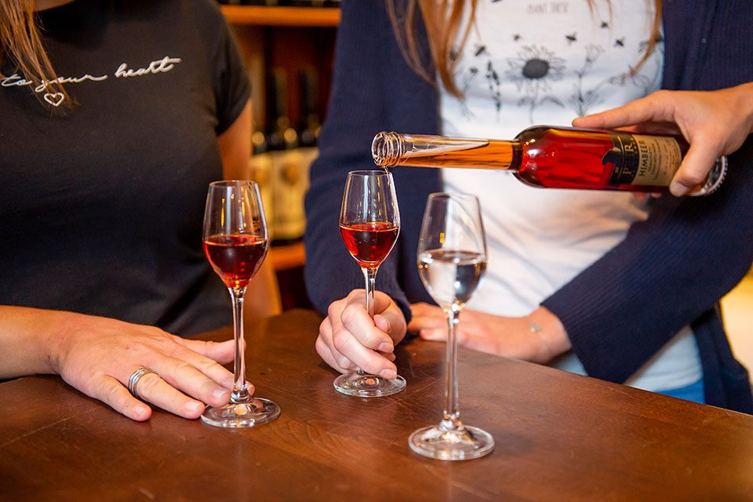

Gutscheine mit Geschmack
Das kulinarische Geschenk für Feinschmecker — online ausgewählt, im Haus eingelöst. Alle Preise inklusive Steuern und Abgaben.
Gutscheine für jeden Anlass
Backhenderlbuffet
ab € 85,205-Gänge-Menü
ab € 88,00Kulinarik-Gutschein
€ 100,00Kulinarik-Gutschein € 50
Der Klassiker für zwei gemütliche Abende in der Weinstube.
Kulinarik-Gutschein € 10
Die kleine Aufmerksamkeit — auch gut kombinierbar mit den größeren Beträgen.
Gutschein direkt bestellen
Wunschbetrag oder Buffet auswählen, Widmung dazuschreiben, fertig — ohne Umweg über einen externen Shop und ohne Anruf.

Gutschein-Vorlagen
In drei Schritten zum gültigen Geschenkgutschein:
- Gutschein im Shop kaufen und die Gutscheinnummer dem Bestätigungs-E-Mail entnehmen.
- Gutschein-Vorlage herunterladen (Format A5 quer).
- Auf Ihrem Drucker ausdrucken, Gutscheinnummer hinzufügen, Freude schenken.
Die Vorlagen stehen als Bilddateien (JPG) bereit.
Grußkarten als PDF
In vier Schritten zum persönlichen Geschenkgutschein: Gutschein kaufen, Grußkarten-Vorlage herunterladen (A4 quer), ausdrucken und Gutscheinbeleg samt Widmung im Innenteil ergänzen, A4 auf A5 falten — fertig zum Verschenken, passend für jedes A5-Kuvert.
- Der Herzl FesttagsgutscheinMuttertag, Geburtstag, Zeugnis
- Der Herzl Genussgutscheinzu zweit, Familie, Freunde
- Schöne Stunden — MuttertagA4 quer
- Schöne Stunden — WeihnachtsfestA4 quer
- Schöne Stunden — alle AnlässeA4 quer